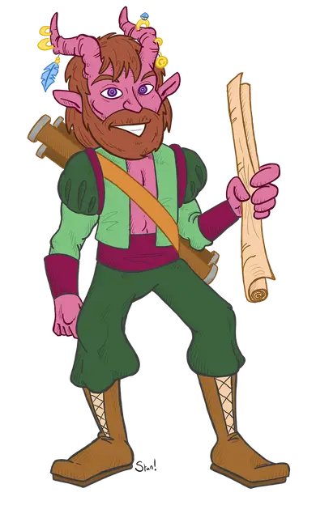

Гаррет Левистуссон
Garret Levistusson
Средний Гуманоид (Тифлинг), хаотично-нейтральный, именной НИП

Класс Доспеха 14 (природный доспех)
Хиты 44 (8к8 + 8)
Скорость 30 футов
| мод | спас | ||
|---|---|---|---|
| СИЛ | 11 | +0 | +0 |
| ЛОВ | 14 | +2 | +4 |
| ТЕЛ | 12 | +1 | +1 |
| мод | спас | ||
|---|---|---|---|
| ИНТ | 11 | +0 | +0 |
| МДР | 12 | +1 | +1 |
| ХАР | 17 | +3 | +5 |
Навыки Выступление +5, Обман +7, Расследование +4, Убеждение +5
Сопротивление урону огонь, холод
Чувства тёмное зрение 60 футов, пассивное Восприятие 11
Языки Общий, Бездны, Воровской жаргон, Инфернальный
Опасность 2 (450 опыта)
Бонус мастерства +2
Особенности
Особое снаряжение. Гаррет носит кольцо тепла [ring of warmth] (уже включено в его характеристику) и владеет длинным мечом игрока [gambler's Blade]
Вдохновение барда (3/день). Бонусным действием Гаррет может дать одному выбранному существу (кроме себя) кость вдохновения к6. Выбранное существо должно находиться в пределах 60 футов от Гаррета и иметь возможность слышать его.
В течение следующих 10 минут это существо может один раз бросить эту кость и добавить результат к проверке характеристики, броску атаки или спасброску, который оно совершает. Существо может принять решение о броске кости вдохновения уже после броска к20, но должно сделать это прежде, чем Мастер объявит результат броска. Как только кость бардовского вдохновения брошена, она исчезает. Существо может иметь только одну такую кость одновременно.
Хитрое действие. В каждый свой ход Гаррет может бонусным действием совершить действие Рывок, Отход или Засада.
Скрытая атака (1/ход). Гаррет причиняет дополнительно 7 (2к6) урона, если попадает по цели атакой оружием, совершённой с преимуществом к броску атаки, или же если цель находится в пределах 5 футов от дееспособного союзника Гаррета, и Гаррет совершал бросок атаки без помехи.
Использование заклинаний. Гаррет является заклинателем 2-го уровня. Его базовой характеристикой является Харизма в качестве базовой характеристики (Сл спасброска от заклинания 13, +5 к попаданию атаками заклинаниями). У него подготовлены следующие заклинания барда:
• Заговоры (неограниченно): защита от оружия [blade ward], злая насмешка [vicious mockery];
• 1 уровень (4 ячейки): очарование личности [charm person], обнаружение магии [detect magic], маскировка [disguise self], опознание [identify], жуткий смех Таши [tasha's hideous laughter].
Действия
Короткий меч. . Рукопашная атака оружием: +4 к попаданию, досягаемость 5 фт., одна цель. Попадание: 5 (1к6 + 2) колющего урона.
Описание
Гаррет - недоверчивый болтун и фокусник, которого Картофил первым выбрал для участия в экспедиции. Однако его навыки составления карт на высоте, и Картофил доверяет ему точно описать маршрут в Даойн Глойн и зарисовать найденные по пути предметы. Гаррет утверждает, что его инфернальный род восходит к Левистусу, а его рога украшены кольцами, монетами и другими безделушками, некоторые из которых, по его словам, являются мощными магическими предметами, готовыми к использованию.